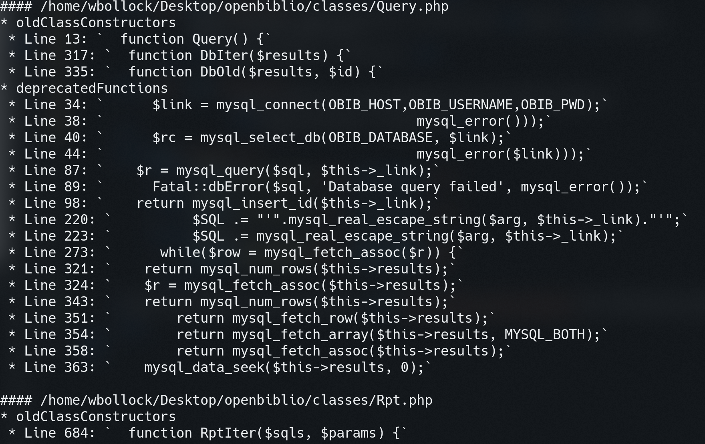
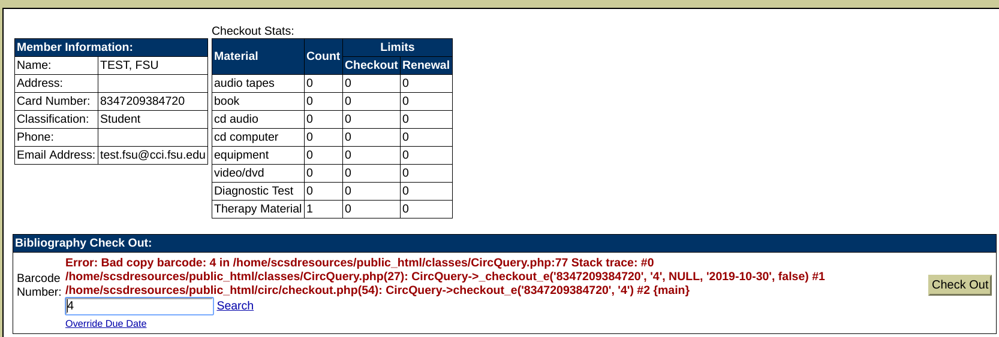

Thank you for completing my coding challenge! Sadly, Github Pages can't run PHP, so I can't verify your answers. Let's hope they're correct.
To give you an example of my programming experience, I will be walking you through my work on OpenBiblio for PHP7.0.
OpenBiblio is a library system that is free and open source. The web application was outdated, and ran only on PHP5 and an outdated MySQL version.
My work is here, released free and open source on Github, and is used by FSU's College of Communication and Information.
First, a quiz. Is the following code valid in PHP5 or PHP7?
$pageErrors[$field] = $err->toStr();
Anyway, onto OpenBiblio. I used a tool called PHP 7 MAR (Migration Assistant Report).
It looked like this:
This tool was fantastic. Without it, I'd have to debug via the web browser, waiting for HTTP 500 errors and debugging from Apache logs.
Thus, I painstakingly went function by function and changed them to PHP7 equivleants.
Finally, I was able to view my webpage and work on testing.
Here's a photo of the interface:
I worked with the Libranian and assistants to debug every feature. For example, the system would "crash" when entering an invalid barcode.
My fix was primitive, but I didn't want to modify too much of the original code:
As you can see, this isn't an elegant solution, but it's better than a blank page.
Anyways, OpenBiblio is still a work in progress. As I find bugs, I push fixes to the Github page.
To continue my career portfolio journey, please click the button below to see my interactive resume!